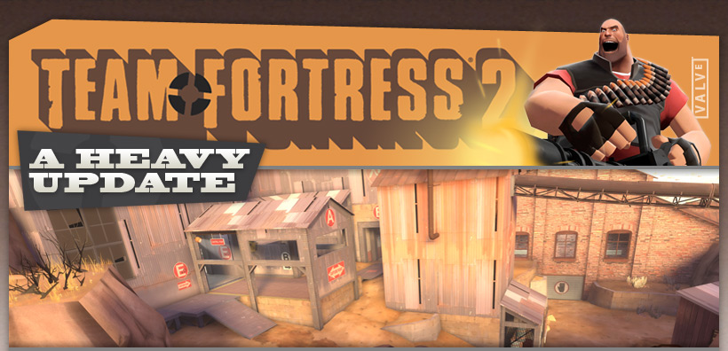

{kind=link}
{kind=link}
created by Jamie "Fishbus" Manson
A complex Attack/Defense control point map, with some unique gameplay. Unlike most TF2 maps, capturing a control point modifies the layout of the map, opening and closing routes for each team. As a result, the offensive team has a wide variety of tactical choices around how they'd like to assault the final point. Should they use Scouts and Soldiers to rush the final point with only the routes they start with? Should they go for the side control points and open up more routes to the final? Should they capture extra points to shut down the defender's routes? The many choices keep the map interesting for a long time, providing a wide variety of experiences in a game.
A complex Attack/Defense control point map, with some unique gameplay. Unlike most TF2 maps, capturing a control point modifies the layout of the map, opening and closing routes for each team. As a result, the offensive team has a wide variety of tactical choices around how they'd like to assault the final point. Should they use Scouts and Soldiers to rush the final point with only the routes they start with? Should they go for the side control points and open up more routes to the final? Should they capture extra points to shut down the defender's routes? The many choices keep the map interesting for a long time, providing a wide variety of experiences in a game.
© 2008 Valve Corporation, all rights reserved. Valve, the Valve logo, Half-Life, the Half-Life logo, the Lambda logo, Steam, the Steam logo,
Team Fortress, the Team Fortress logo, Opposing Force, Day of Defeat, the Day of Defeat logo, Counter-Strike, the Counter-Strike logo,
Source, the Source logo, Valve Source and Counter-Strike: Condition Zero are trademarks and/or registered trademarks of Valve Corporation.
Team Fortress, the Team Fortress logo, Opposing Force, Day of Defeat, the Day of Defeat logo, Counter-Strike, the Counter-Strike logo,
Source, the Source logo, Valve Source and Counter-Strike: Condition Zero are trademarks and/or registered trademarks of Valve Corporation.